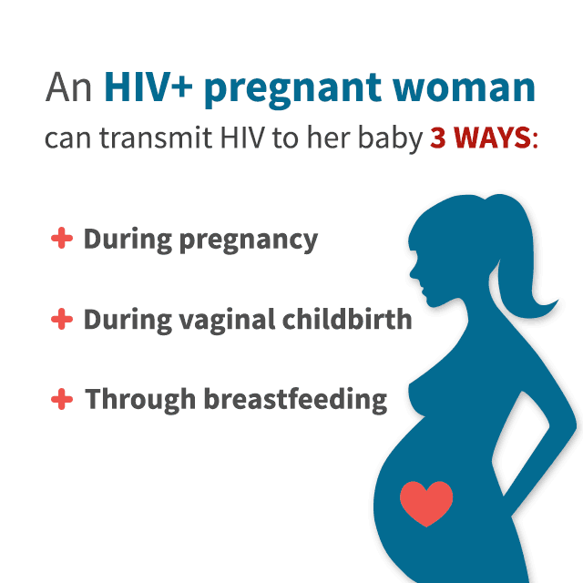
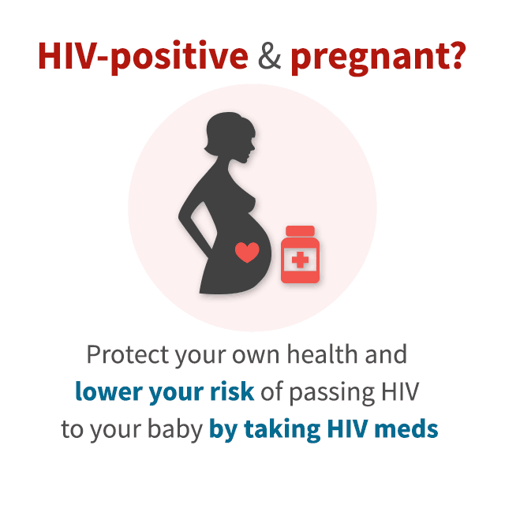
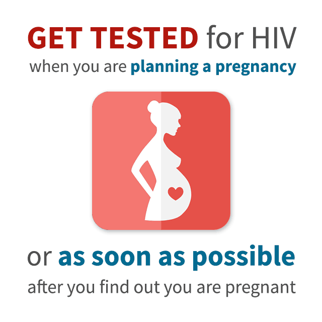

PREGNANCY AND CHILDBIRTH
  
Key Points on Preventing Mother-to-Child Transmission of HIV After Birth
- For 4 to 6 weeks after birth, babies born to women with HIV receive an HIV medicine called zidovudine (brand name: Retrovir). The HIV medicine protects the babies from infection with any HIV that passed from mother to child during childbirth.
- HIV testing for babies born to women with HIV is recommended at 14 to 21 days of life, at 1 to 2 months, and again at 4 to 6 months. The HIV test used (called a virologic test) looks directly for HIV in the blood.
- Results on two virologic tests must be negative to be certain that a baby is not infected with HIV. The first negative result must be from a test done when a baby is 1 month or older and the second result from a test done when a baby is 4 months or older. Results on two HIV virologic tests must be positive to know for certain that a baby is infected with HIV.
- If testing shows that a baby has HIV, the baby is switched from zidovudine to a combination of HIV medicines. HIV medicines help children infected with HIV live healthier lives.
- Because HIV can spread in breast milk, HIV-infected women in the United States should not breastfeed their babies. In the United States, infant formula is a safe and healthy alternative to breast milk.
-
Worried about your personal Problems ? Here are some clarification !
Get Answered1. After childbirth, do babies born to women with HIV receive HIV medicines to prevent mother-to-child transmission of HIV?
Babies born to women with HIV receive an HIV medicine called zidovudine (brand name: Retrovir) within 6 to 12 hours after birth. (In certain situations, a baby may receive other HIV medicines in addition to zidovudine.) The HIV medicine protects the babies from infection with any HIV that may have passed from mother to child during childbirth.
2. How long do babies born to women with HIV receive zidovudine to prevent mother-to-child transmission of HIV?
In general, babies born to women with HIV receive zidovudine for 4 to 6 weeks after birth. Once the 4- to 6-week course of zidovudine is finished, the babies receive a medicine called sulfamethoxazole/trimethoprim (brand name: Bactrim). Bactrim helps prevent Pneumocystis jiroveci pneumonia (PCP), which is a type of pneumonia that can develop in people with HIV. If HIV testing shows that a baby is not infected with HIV, Bactrim is stopped.
3. How soon after birth are babies born to women with HIV tested for HIV?
After birth, care for babies born to women with HIV includes HIV testing, usually at 14 to 21 days of life, at 1 to 2 months, and again at 4 to 6 months. The HIV test used (called a virologic test) looks directly for HIV in the blood. Results from at least two HIV virologic tests are needed to know for certain whether a baby is HIV negative or HIV positive. To know for certain that a baby is HIV negative (not infected with HIV): Results on two virologic tests must be negative. The first negative result must be from a test done when a baby is 1 month or older, and the second result from a test done when a baby is 4 months or older. To know for certain that a baby is HIV positive (infected with HIV): Results on two virologic tests must be positive. If testing shows that a baby is HIV positive, the baby is switched from zidovudine to a combination of HIV medicines (called antiretroviral therapy or ART). ART helps people with HIV live longer, healthier lives.
4. What other steps protect babies from HIV?
Because HIV can spread in breast milk, women with HIV who live in the United States should not breastfeed their babies. In the United States, infant formula is a safe and healthy alternative to breast milk. There are reports of children becoming infected with HIV by eating food that was previously chewed by a person with HIV. To be safe, babies should not be fed pre-chewed food. -